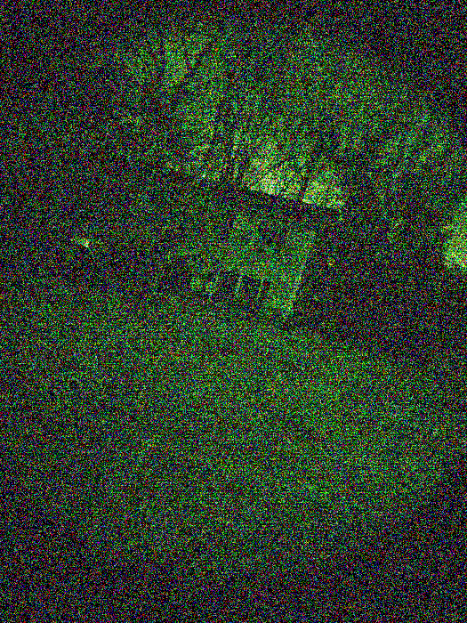

.svg)
SCP FOUNDATION
SECURE. CONTAIN. PROTECT.
INTERNAL MEMORANDUM #0001
When this memorandum is received and acknowledged, standard data sanitization protocols apply. Destroy physical copies after digital confirmation.
Stabilization efforts appear successful following initial containment. Primary anomaly source confirmed at coordinates ██.████, -██.████. Entity designation pending, exhibits reality-bending properties of significant magnitude, though containment appears feasible. You will lead Mobile Task Force Alpha-1 ("Red Right Hand") designation pending to conduct thorough reconnaissance of the affected area. Gather all available data on entity behavior, properties, and local environmental effects. If the entity becomes aware of MTF presence, immediately initiate Protocol Chimera-Gamma as outlined in Addendum 0001-A (Ref: Doc ███-██). Do NOT deviate.
Standing orders from O5 Command explicitly forbid direct interaction with the anomaly at this stage. Continuous passive surveillance is authorized until further notice or issuance of an engagement order. Prioritize personnel safety and data integrity.
Attached is the final image transmitted by Exploration Team Bravo-2 prior to signal loss. Recover their data packet; its contents are considered critical intelligence. Deliver recovered materials directly to Site-19 secure archives upon return. Image Security Code: 51856. Acknowledge receipt.
